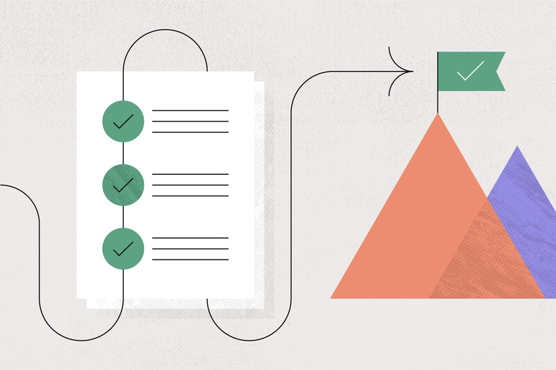

Start by outlining your meals for the week. Use a planner or template to assign meals to each day and make a matching grocery list.
- ✅ Pick 2 proteins, 2 carbs, 3 vegetables to rotate.
- ✅ Consider your schedule and plan for busy nights.
- ✅ Stick to recipes that share ingredients.

Batch cooking is the ultimate time-saver. Choose a weekend day or evening to prepare several meals at once.
- 🍗 Roast a sheet pan of chicken, tofu, or tempeh.
- 🥦 Steam or roast large batches of vegetables.
- 🍚 Cook grains like rice or quinoa in bulk.
- 🥘 Prepare soups, stews, or casseroles to divide into containers.
- ❄️ Freeze leftovers in labeled containers for future use.

Make your cooking routine more efficient with these tips:
- 🔪 Buy pre-cut or frozen vegetables to skip prep time.
- ⌛ Use appliances like a rice cooker, Instant Pot, or air fryer.
- 🍽 Choose one-pot or one-pan recipes to reduce cleanup.
- 🧽 Clean as you go — wipe counters and wash dishes while things cook.
Don’t feel overwhelmed — even prepping breakfast or lunch for a couple of days can have a big impact. Over time, you’ll develop a system that works for you.